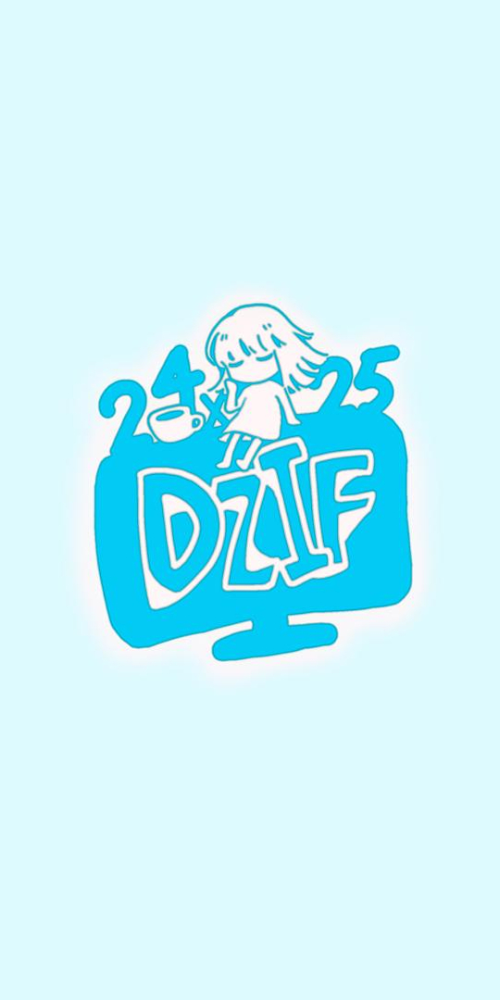

社團博覽會
聯合迎新
資訊社首次跟外校的合作！
迎新可以說是學弟妹在社團參加的第一個活動，
也是我們幹部第一次舉辦活動。
當時我們接到了其他學校的合作邀請，
一起規劃、舉辦迎新，
合作學校有附中、松山、建中、政附、大安、中山，
加上大直，
總共七個學校。
很高興能和這麼多學校一起舉行迎新，
但這麼大規模的活動讓我們不禁擔憂自己是否能給予什麼幫助，
畢竟我們沒有舉辦這種大型活動的經驗。
由於這次迎新是七個學校一起舉辦，
所以每個人都兢兢業業，
盡力做好自己的工作，
從分工、開會、工作過程，
給個過程都十分嚴謹，
很難相信他們也跟我們一樣，
是第一次辦大型的跨校活動。
在這次的活動中，
我們有很多事情是需要向他們學習的，
例如他們會先訂下某件事情該在哪一天前完成，
這樣可以避免讓大家太過懶散，
不會導致事情一拖再拖；
還有可以學習的地方像是：
這次迎新有好幾個活動，
因為事情太多所以需要有一位負責人個別處理各活動的事物，
工作人員報告進度、遇到的困難給負責人，
之後負責人會報告事務給總召。
這種上對下的結構讓處理事情的效率更加快速。
他們規劃事情的能力與態度令人讚嘆。
在迎新當天之前我們從來沒有見過面，
因為是不同校，
每個學校又各自有很多事情要忙，
所以基本上只有在網路上討論，
而這樣的協作模式竟然就能寫出很多迎新的詳細內容，
並且確確實實的執行計畫。
他們在現場時，
也能應負各種突發情況，
不論哪裡出了問題都能在短時間內解決，
那種當機立斷的能力令人敬佩。
最終，
聯合迎新進行得很順利，
若是能成為學弟妹的美好回憶，
那我們的目標也就達成了。
也希望學弟妹能和其他校的學生交個朋友，
和他校做交流。
迎新能如此順利是多虧所有人的努力，
除了總召和負責人外，
工作人員也是很認真做好活動的事務，
就算只少了一個人遊戲都沒辦法完整地進行下去。
這次迎新讓我們學到好多規劃事情的能力，
為了成為不輸他們的學長姐，
我們也要繼續努力下去，
不斷精進自己。
-- 副社長 林暄騏
校慶園遊會
「賺爛了賺爛了，真的大成功。」 -- 社長兼教學 傅垣幀
這次的園遊會是以社團為單位進行擺攤，
而擺攤的收益學校會對其抽成並用在公益活動，
剩下的部分，
則是退還攤位保證金之後全數納入該社團社費之中。
起初，
因為要段考的關係，
我們討論的進度有些慢，
一直到段考後剩下兩週左右就要園遊會時，
我們才加緊趕工。
這次校慶主題是「懷舊、復古」，
因此我們攤位的名稱叫做「圖靈食物坊」，
「圖靈」是取自發明最初的電腦的人，
電腦之父「艾倫•圖靈」，
「食物坊」則是因為我們選擇販賣食物，
而不是其他物品，
像是攝影社就販賣自己社團拍攝的照片。
經過大家的討論、協商，
最終拍板定案菜單內容為以下這些：炒麵麵包、抹茶牛奶、巧克力飲料，
搭配套餐或是飲料可以加價原則配料，
如巧克力+棉花糖、抹茶+巧克力等等。
為了完美的完成此次園遊會，
前期準備工作如下：
1. 輪班人員的調查、排班：
要事先調查社團內部除了幹部之外，
還有誰會願意來幫忙，
並且安排這些人的輪班，
讓他們可以休息，
或是去逛別的攤位。
2. 確認菜單+繪製傳單、攤位海報：
菜單上的菜色要試做，
將其流程化與材料必須要定量。
而經過討論的菜單要經過美宣的加工，
製作成掛在攤位上的海報，
同時發放傳單，
傳單上附贈了$5及$10的折價券，
作為宣傳攤位的策略。
3. 採購食材+租借擺攤物品：
確定所需數量的菜單需要所有人分工進行購買，
除了到露營用品店的網站租借卡式爐與冰桶、到賣場進行食材、材料購買，
還要有人從家中攜帶鍋具、清潔用品(洗碗精、菜瓜布)。
4. 場地布置：
園遊會前一天要在現場將桌椅擺放、定位完成，
同時再次確認隔天的分工狀況。
園遊會當天由於我們攤位處於較裡面的位置，
加上操場上的表演以及校園各處的快閃活動，
其中影響最大的是商品的重複性過高，
很多攤位都在販賣炒泡麵，
和炒麵麵包性質相似，
所以一開始生意很冷清。
一直到接近中午時，
別的攤位都賣得差不多了，
我們的生意才開始火爆起來。
我們利用結束前的最後1小時進行業績衝刺，
大家都揮汗如雨，
也許是上天看到了我們所有人的付出，
最終我們成功將淨利突破了1萬大關。
得知此消息時，
幹部們都感到很激動，
付出所有終將得到回報，
也感謝高三特別前來幫忙的學長，
於準備學測的百忙之中抽空前來，
支援我們。
經過這次園遊會，
幹部們的感情都增進了不少，
也為之後的各種合作奠定良好基礎。
更多的是和高一一同參與了全程，
增加默契的同時，
也為高中三年留下了難以忘懷的回憶，
更為了之後的接幹提早鋪陳。
-- 副社長 林暄騏
Talking To The Moon
左圖是校慶的前一周
我們第一次的正式試做
從材料、配方、比例
到杯子、吸管、貼紙
正式定下了我們商品的模型
校慶結束後的大合照
關於我們的多社聯合促銷「戰國七雄」...
由於59週年校慶是社團擺攤，
加上資訊社又沒有足夠的名氣吸引顧客，
因此我們採取了多社聯合的方式作為噱頭吸引人潮。
我們找來了和我們處境相似的另外6個社團，
全都是屬於非表演性質的社團，
其中包含了偏向知識、研究類型的、體育性質的，
以及娛樂類的社團，
一同舉辦了一個合作計畫。
合作的社團共有7個，
分別為羽球、排球、資訊、桌遊、演辯、影欣、科研。
在這7個社團的攤位之中，
會共用統一的折價券，
面額為$5，
讓消費者更願意來我們的攤位消費。
再來就是攤位位置的問題。
為避免想要使用折價券的顧客需要東奔西走，
我們絕地將攤位合併成為一條龍產業鏈，
方便顧客一連串的逛下去。
經過與學務處的協商，
我們7社的攤位合併為一長排，
並安排在學校最內部，
離操場與校門口較遠的西楓亭。
雖然西風亭的位置偏遠，
距離觀看表演的人潮有些距離，
不易招攬生意，
不果我們也因禍得福。
因為西楓亭場地空曠，
且基本上我們7社就已經將場地佔據的滿滿的，
等同於包場，
因此我們攤位空間足夠多，
不會有空間太小的問題，
也不會與其他賣小吃的社團食物香味互相衝擊，
味道較為單純，
更能夠凸顯、分辯我們的商品的好吃程度。
在人力分布方面，
各社團也不會過於擁擠，
自家門前都有足以容納10人以上的排隊空間，
為後續的絡繹不絕留下了應付空間。
攤位帳棚內也足夠容下4人，
對於店員來說空間非常充足，
可以安心做事不用擔心被隔壁的同事干擾。
而就結果來說，
這個企劃算是相當成功，
在最後統計時，
我們幾個社團都有回收大量的折價券，
證明了有許多消費者來到了我們這一區的攤位消費。
而攤開數據，
我們社團的淨利也相當可觀，
可以說這個「戰國七雄」是實在地進一步提升了我們的銷量。
聯合社烤
聯合社烤
從提議開始，社烤這個活動就一波三折，不是不知道怎麼規劃，就是沒有時間討論，導致好幾次說要辦社烤卻都不了了之。而在下學期，我們終於決定要辦社烤，並且還聯合了其他兩個社團----羽球和科研。三社一起舉行的社烤在規劃中遇到了很多問題，像是烤肉的場地。因為最受學生歡迎的河濱公園在疫情警戒期間所以不開放烤肉，為了找到一個適合的場地，我們花了很久的時間。我們對好幾個場地進行比較，像是價錢、路程、垃圾處理等等，都是需要考量的因素，並且還要不斷的打電話與對方確認詳細事項，如當天的訂位、支付的價錢等。 為了做活動前最後的確認，三個社的幹部們親自到了現場場勘，一次又一次的討論來回路程、烤肉位置，這些關於場地的問題花了大家不少心力。除了場地的問題，我們還準備了團康的活動，希望能與參加的社員一起同樂，但是關於玩什麼遊戲、誰主持、在什麼場地這些問題，都令大家十分頭痛，耗費了不少間處理。我們認為，團康最重要的核心就是藉由遊戲讓大家互相認識，藉此連結彼此的感情，所以團康絕對不能隨便規劃。活動當天進行得非常順利，所有人準時抵達場地，沒有下雨，團康的遊戲也讓大家玩得不亦樂乎，氣氛十分的活絡。能在這樣的氣氛下烤肉給大家留下了很棒的回憶，而活動也順利的結束了。 雖然我們為了社烤而傷透了腦筋，一直很擔心是否能讓社員們玩得愉快，偶爾甚至還會有放棄的念頭。但在活動結束後，我們才發覺這段時間的努力十分值得，不只活動當下十分開心，討論的時候也發現了很多自己不足的地方。社烤帶給我們很多回憶，也讓我們學習到了很多與人合作的方法。
